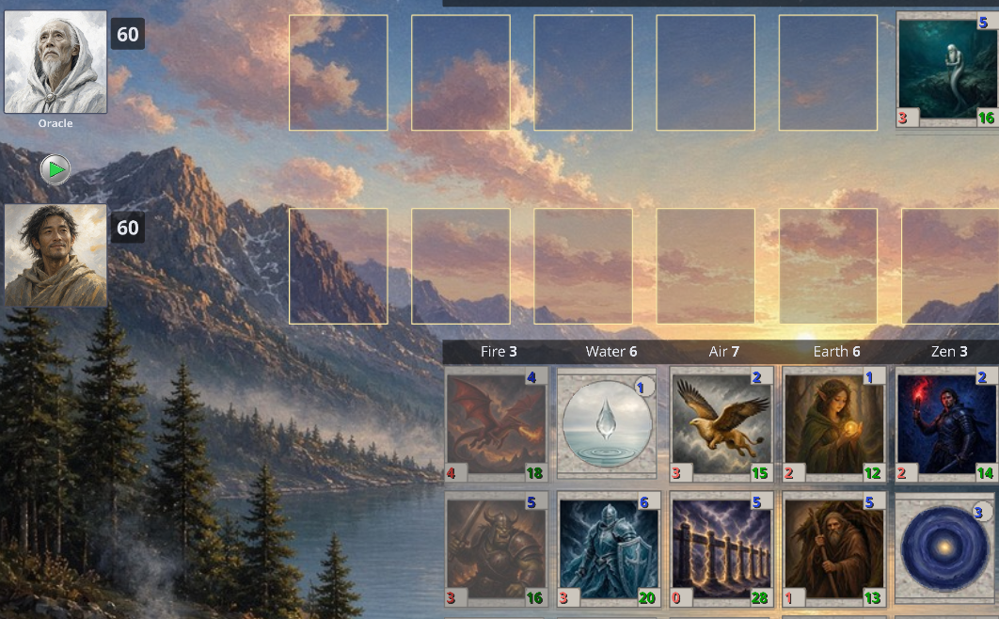

The Mancer's echo
A fantasy card duel, small tribute to Spectromancer©.

The game is an AI port of a personal project with some improvements (fixes, enhancements) and generic AI generated art in dark fantasy MTG style.
Houses from community suggestions
Vampires, Shadowmage, Entomologist and more, each with its own creatures and spells.
Campaign & duels
Work through the campaign, or pick a duel against a bot.
Internationalization
Contains AI translations in multiple languages (English, French, Spanish, Russian, Vietnamese).
Limitations: not all rules of the original game are implemented (the 1% rule, some deck rules).
You can support the original game by buying it on Spectromancer.com.
The art is great (music and graphics). There's a multiplayer mode, and the classes are well balanced.